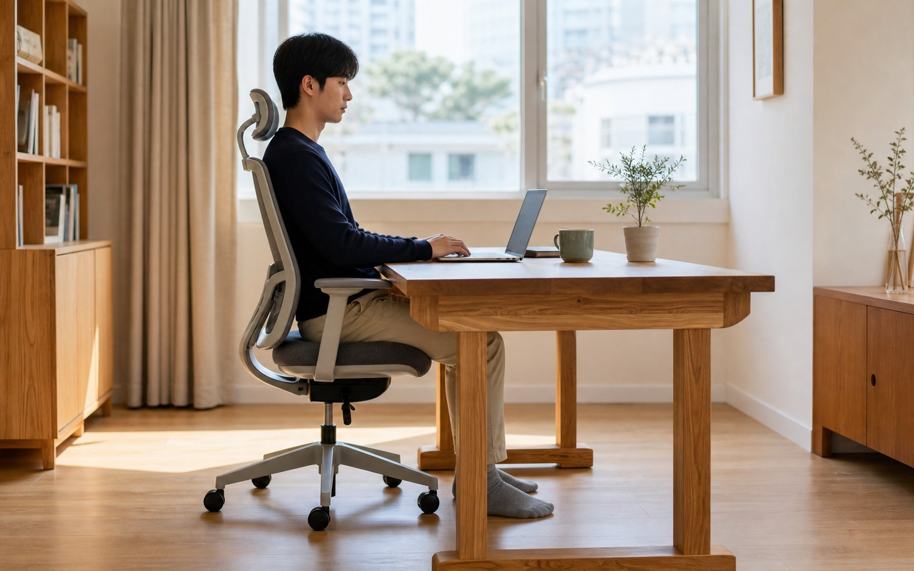

의자와 책상 높이: 오래 앉아도 편한 가구의 기준

요약 설명:
책상과 의자를 고를 때는 디자인뿐 아니라 좌면 높이, 상판 높이, 팔꿈치 위치, 발의 지지, 등받이와 작업 거리까지 함께 봐야 합니다. 오래 앉아도 편한 가구를 고르는 기준을 생활 속 사용성 관점에서 정리합니다.
검색 키워드:
- 책상 의자 높이 맞추기
- 원목 책상 높이
- 의자 좌면 높이
- 인체공학 가구
- 작업 책상 고르는 법
- 오래 앉아도 편한 의자
책상과 의자는 집 안에서 가장 오래 몸이 닿는 가구입니다. 식탁은 식사 시간에 집중되어 있지만, 책상은 공부, 업무, 독서, 취미 작업까지 하루의 여러 시간을 받아냅니다. 그래서 책상과 의자를 고를 때는 수종과 디자인만으로 판단하기 어렵습니다.
편한 책상은 단순히 넓은 책상이 아닙니다. 편한 의자도 푹신한 의자만을 뜻하지 않습니다. 발이 바닥에 안정적으로 닿고, 허벅지 뒤쪽이 눌리지 않으며, 어깨를 올리지 않아도 팔을 올릴 수 있고, 몸을 앞으로 과하게 숙이지 않아도 작업할 수 있어야 합니다.
이번 글에서는 원목 책상과 의자를 함께 고를 때 살펴볼 기준을 정리합니다. 숫자는 출발점일 뿐이고, 핵심은 사용자의 몸과 작업 방식에 맞는 관계를 찾는 일입니다.
의자 높이는 발에서 시작합니다
의자 높이를 볼 때 가장 먼저 확인할 부분은 발입니다. 앉았을 때 발바닥 전체가 바닥에 편안하게 닿아야 몸의 무게가 의자와 바닥으로 나뉘어 전달됩니다. 발이 뜨면 허벅지 아래쪽과 엉덩이에 압박이 커지고, 반대로 좌면이 너무 낮으면 무릎이 과하게 올라가 골반이 뒤로 말리기 쉽습니다.
CCOHS의 사무 인체공학 자료는 좋은 의자의 조건으로 사용자가 발을 바닥이나 발받침에 둘 수 있고, 허벅지 아래에 압박이 생기지 않는 높이 범위를 강조합니다. OSHA의 컴퓨터 작업대 자료도 좌면 높이는 발바닥이 바닥에 닿고 무릎 뒤가 좌면보다 약간 높아지는 정도가 적절하다고 설명합니다.
생활 속에서 확인할 점:
- 발바닥 전체가 바닥에 닿는가?
- 허벅지 뒤쪽이나 무릎 뒤가 눌리지 않는가?
- 엉덩이가 좌면 깊숙이 들어가도 등이 등받이에 닿는가?
- 앉은 상태에서 몸을 앞으로 당기지 않아도 책상 가까이에 올 수 있는가?
의자의 좌면 높이가 맞지 않으면 좋은 책상도 불편해집니다. 특히 원목 의자는 구조가 고정된 경우가 많기 때문에, 의자를 먼저 정했다면 책상 높이를 함께 맞춰 보는 것이 좋습니다.
책상 높이는 팔꿈치와 어깨가 알려줍니다
책상 높이는 앉은 사람의 팔 위치와 직접 연결됩니다. 상판이 너무 높으면 어깨가 올라가고 목 주변에 긴장이 쌓입니다. 상판이 너무 낮으면 등이 굽고 손목이 꺾이기 쉽습니다.
책상 앞에 앉았을 때 팔꿈치를 몸 가까이에 두고, 어깨에 힘을 빼고, 팔을 자연스럽게 앞으로 올려보면 대략적인 기준을 알 수 있습니다. 키보드 작업이나 필기처럼 손을 오래 쓰는 작업에서는 팔꿈치와 전완이 지나치게 들리거나 꺾이지 않는 것이 중요합니다.
확인할 것:
- 어깨를 올리지 않아도 손이 상판에 닿는가?
- 팔꿈치가 몸에서 너무 멀리 벌어지지 않는가?
- 손목이 위아래로 과하게 꺾이지 않는가?
- 노트북이나 책을 볼 때 목을 오래 숙이지 않아도 되는가?
시중 책상 높이는 대체로 평균적인 신체 치수에 맞춰져 있지만, 모든 사람에게 같은 높이가 편하지는 않습니다. 키가 작은 사람에게는 일반 책상이 높을 수 있고, 키가 큰 사람에게는 의자를 높였을 때 다리 공간이 부족할 수 있습니다.
책상과 의자는 세트로 맞아야 합니다
가구를 따로 볼 때 놓치기 쉬운 것이 책상과 의자의 관계입니다. 의자만 편해도 책상 높이가 맞지 않으면 어깨와 손목이 불편해지고, 책상이 좋아도 의자 좌면이 맞지 않으면 허리와 다리에 부담이 갑니다.
특히 주문 제작 책상을 고려한다면 의자 정보를 함께 보는 것이 좋습니다.
- 현재 사용하는 의자의 좌면 높이
- 의자 팔걸이 유무와 높이
- 책상 아래로 의자가 충분히 들어가는지
- 허벅지와 상판 하부 사이의 여유
- 서랍이나 보강대가 무릎 움직임을 막지 않는지
원목 책상은 상판 아래에 보강대나 서랍 구조가 들어갈 수 있습니다. 이 구조가 튼튼함을 만들기도 하지만, 사용자의 무릎과 허벅지 공간을 줄일 수도 있습니다. 그래서 책상은 상판 높이만이 아니라 하부 여유 공간까지 함께 봐야 합니다.
등받이와 좌면 깊이도 높이만큼 중요합니다
오래 앉는 의자에서 좌면 높이만 맞는다고 충분하지는 않습니다. 등받이가 허리를 적절히 지지하고, 좌면 깊이가 몸에 맞아야 자세가 안정됩니다.
좌면이 너무 깊으면 짧은 체형의 사용자는 등을 기대기 위해 뒤로 앉을 때 무릎 뒤가 눌립니다. 반대로 좌면이 너무 얕으면 허벅지 지지가 부족해 앉은 자세가 불안해질 수 있습니다. OSHA 자료는 좌면 깊이가 사용자에게 맞아야 허벅지를 지지하면서도 무릎 뒤와 좌면 앞쪽 사이에 압박이 생기지 않는다고 설명합니다.
좋은 의자를 볼 때는 다음을 살펴봅니다.
- 등받이가 허리의 자연스러운 곡선을 받쳐주는가?
- 좌면 앞 모서리가 둥글거나 부드럽게 처리되어 있는가?
- 좌면이 너무 깊어 무릎 뒤를 누르지 않는가?
- 앉은 뒤 자세를 조금 바꿀 수 있는 여유가 있는가?
나무 의자는 쿠션 의자보다 표면이 단단하게 느껴질 수 있습니다. 그래서 좌면의 곡면, 앞 모서리의 처리, 등받이 각도 같은 세부가 더 중요해집니다. 원목 의자의 편안함은 두꺼운 쿠션이 아니라 몸에 닿는 면의 정직한 비례에서 나옵니다.
팔걸이는 있으면 좋은가, 없어야 편한가
팔걸이는 의자의 인상을 고급스럽게 만들고 앉고 일어설 때 도움을 줍니다. 하지만 책상과 함께 쓸 때는 주의가 필요합니다. 팔걸이가 너무 높거나 넓으면 의자가 책상 가까이 들어가지 못하고, 사용자는 팔을 앞으로 뻗은 자세로 작업하게 됩니다.
CCOHS와 OSHA 모두 팔걸이는 어깨가 편안하고 팔이 몸 가까이에 있을 수 있도록 맞아야 하며, 작업대 접근을 방해한다면 조정하거나 사용하지 않는 편이 낫다고 설명합니다.
팔걸이가 잘 맞는 경우:
- 독서나 회의처럼 팔을 쉬게 하는 시간이 많다.
- 의자에 앉고 일어설 때 지지점이 필요하다.
- 책상 하부 공간이 충분해 의자가 자연스럽게 들어간다.
팔걸이가 불편할 수 있는 경우:
- 상판 아래로 의자가 들어가지 않는다.
- 팔걸이 때문에 어깨가 올라간다.
- 키보드나 필기 위치가 몸에서 멀어진다.
- 작은 방에서 의자를 넣고 빼는 동선이 부족하다.
책상용 의자를 고를 때는 팔걸이의 유무보다 책상과 함께 놓였을 때의 동작을 확인하는 것이 더 중요합니다.
작업 내용에 따라 좋은 높이가 달라집니다
모든 책상이 같은 작업에 맞지는 않습니다. 노트북 업무, 손글씨, 그림 작업, 재봉이나 모형 제작은 손과 눈의 위치가 다릅니다.
예를 들어 노트북 작업은 화면이 낮아 목이 숙여지기 쉽습니다. 이때는 책상 높이만 높이는 것보다 노트북 받침과 별도 키보드를 함께 쓰는 편이 자세를 맞추기 쉽습니다. 반대로 손으로 힘을 주는 작업은 상판이 너무 높으면 어깨가 빨리 피로해질 수 있습니다.
작업별로 생각할 점:
- 노트북 업무: 화면 높이와 키보드 위치를 분리해 본다.
- 필기와 독서: 팔꿈치와 손목이 편안한 상판 높이를 본다.
- 공예나 조립 작업: 팔을 누르거나 힘을 줄 때 어깨가 들리지 않는지 본다.
- 아이 책상: 성장에 따라 조정 가능한 의자와 발받침을 함께 고려한다.
좋은 가구는 하나의 숫자로 끝나지 않습니다. 사용자가 어떤 동작을 가장 오래 하는지에 따라 편안함의 기준이 달라집니다.
주문 제작 상담 전에 확인하면 좋은 치수
책상이나 의자를 맞추기 전에는 현재 사용하는 가구에서 편한 점과 불편한 점을 함께 기록해두면 좋습니다.
- 현재 책상 상판 높이
- 현재 의자 좌면 높이
- 앉았을 때 발이 바닥에 닿는지 여부
- 책상 아래 무릎과 허벅지 여유
- 주로 하는 작업과 하루 사용 시간
- 팔걸이 의자를 쓸지 여부
- 모니터, 노트북, 키보드, 조명 배치
사진도 도움이 됩니다. 정면과 옆에서 앉은 모습을 찍어 보면 어깨가 올라가는지, 등이 과하게 굽는지, 의자가 책상에서 멀어지는지 더 쉽게 확인할 수 있습니다.
목간의 생각
책상과 의자는 몸을 오래 맡기는 가구입니다. 그래서 좋은 재료와 아름다운 결만큼이나, 사용자의 자세와 생활 리듬을 살피는 일이 중요합니다.
원목 책상은 오래 쓰는 물건이기에 처음부터 높이와 하부 구조를 신중히 봐야 합니다. 원목 의자는 단단한 재료로 만들기 때문에 좌면의 곡면, 등받이의 각도, 다리 구조가 편안함을 좌우합니다. 편한 가구는 몸을 억지로 맞추게 하지 않고, 자연스럽게 좋은 자세로 돌아오게 합니다.
목간은 책상과 의자를 만들 때 따로 떨어진 물건으로 보지 않습니다. 앉는 사람의 발, 무릎, 허리, 어깨, 손이 하나의 선 안에서 편안한지 함께 봅니다. 매일 쓰는 가구일수록 그 작은 차이가 오래 남습니다.
참고한 자료
- Canadian Centre for Occupational Health and Safety,
Office Ergonomics - Ergonomic Chair - Occupational Safety and Health Administration,
Computer Workstations eTool: Chairs - Occupational Safety and Health Administration,
Computer Workstations eTool: Desks - Julius Panero, Martin Zelnik,
Human Dimension & Interior Space, Whitney Library of Design